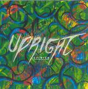

| Artist: | Upright |
| Title: | Opinion |
| Label: | Unicorn Records UNCR-5011 |
| Length(s): | 40 minutes |
| Year(s) of release: | 2004 |
| Month of review: | [05/2004] |
| 1) | Nouveau Départ | 5.40 |
| 2) | Opinion | 7.21 |
| 3) | Le Grand | 4.28 |
| 4) | Some Food | 4.26 |
| 5) | Maverick | 5.56 |
| 6) | Progression | 3.00 |
| 7) | Stay Put | 5.27 |
| 8) | Z | 4.09 |
Opinion continues the moody/melancholy jazz feel of the first track, in fact getting a bit moodier and more melancholic. The band plays very careful here, in fact a bit too careful, as if they are not sure what the other instrumentalists are going to be doing next. I have seen that somewhere as the definition of jazz music. The guitar meanders a bit again, it is the sax that introduces a bit of groove. The keyboards have their place in the sun, carefully soloing its way through the material. A wan sun indeed.
Le Grand does not signify any large departure from the chosen style. The drumming is rather straightforward, the two lead instruments each get time to put themselves on display, but I am not hearing anything I haven't heard yet.
Some Food is a very slow and sad opener. After this opening, the bounce comes in, with the sax playing second voice to the relaxed guitar. The keyboardist approachees his solo in a tasteful way, thus ensuring a lack of energy. Where is the enthusiasm?
The previous track had quite a bit of keyboards, and Maverick opens with warm, subdued vibes. For the rest: the same old story.
Progression is a short one, which seemed to open with a bit of rock, but this impression soon goes away, and we are back to meandering sax. Stay Put is a bit more groovy, but the drumming for instance is boring. On Z, we find more keyboards (organ and piano in fact) than usual, and the bass gets its solo too.